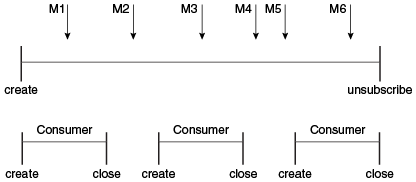

@Resource(lookup = "java:comp/DefaultJMSConnectionFactory")
private static ConnectionFactory connectionFactory;
El Modelo de Programación de la IPA de JMS
Los componentes básicos de una aplicación JMS son
-
Objetos administrados: fábricas de conexiones y destinos
-
Conexiones
-
Sesiones
-
Objetos
JMSContext, que combinan una conexión y una sesión en un objeto -
Productores de mensajes
-
Consumidores de mensajes
-
Mensajes
La Figura 48-5 muestra cómo encajan todos estos objetos en una aplicación cliente JMS.
Figura 48-5 El Modelo de Programación de la IPA de JMS

JMS también proporciona navegadores de colas, objetos que permiten que una aplicación busque mensajes en una cola.
Esta sección describe todos estos objetos brevemente y proporciona ejemplos de comandos y fragmentos de código que muestran cómo crear y usar los objetos. La última subsección describe brevemente el manejo de excepciones de la IPA de JMS.
Los ejemplos que muestran cómo combinar todos estos objetos en aplicaciones aparecen en el Capítulo 49, "Ejemplos del Servicio de Mensajería de Java," comenzando con Escritura de Aplicaciones JMS Simples. Para obtener más detalles, consulte la documentación de la IPA de JMS, parte de la documentación de la IPA de Java EE.
Objetos Administrados por JMS
Dos partes de una aplicación JMS, los destinos y las fábricas de conexiones, normalmente se mantienen de forma administrativa en lugar de mediante programación. Es probable que la tecnología subyacente a estos objetos sea muy diferente de una implementación de la IPA de JMS a otra. Por lo tanto, la gestión de estos objetos pertenece a otras tareas administrativas que varían de un proveedor a otro.
Los clientes de JMS acceden a objetos administrados a través de interfaces que son portables, por lo que una aplicación de cliente puede ejecutarse con poco o ningún cambio en más de una implementación de la IPA de JMS. Normalmente, un administrador configura los objetos administrados en un espacio de nombres JNDI y los clientes JMS acceden a ellos mediante la inyección de recursos.
Con el servidor GlassFish, puede usar el comando asadmin create-jms-resource o la
consola de administración para crear objetos administrados por JMS en forma de recursos de
conector. También puede especificar los recursos en un archivo llamado
glassfish-resources.xml que puede agrupar con una aplicación.
El EID NetBeans proporciona un asistente que le permite crear recursos JMS para el servidor GlassFish. Ver Creación de Objetos Administrados JMS para más detalles.
La especificación de la plataforma Java EE permite que un desarrollador cree objetos administrados utilizando anotaciones o elementos descriptores de implementación. Los objetos creados de esta manera son específicos de la aplicación para la que se crean. Ver Creación de Recursos para Aplicaciones de Java EE para más detalles. Las definiciones en un descriptor de implementación anulan las especificadas por las anotaciones.
Factorías de Conexión de JMS
Una fábrica de conexiones es el objeto que utiliza un cliente para crear una conexión con un
proveedor. Una fábrica de conexiones encapsula un conjunto de parámetros de configuración de
conexión que ha definido un administrador. Cada fábrica de conexiones es una instancia de la
interfaz ConnectionFactory, QueueConnectionFactory o
TopicConnectionFactory. Para aprender a crear fábricas de conexiones, consulte
Creación de Objetos Administrados JMS.
Al comienzo de un programa de cliente JMS, generalmente inyecta un recurso de fábrica de
conexiones en un objeto ConnectionFactory. Un servidor Java EE debe proporcionar
una fábrica de conexiones JMS con el nombre JNDI lógico
java:comp/DefaultJMSConnectionFactory. El nombre JNDI real será específico de la
implementación.
Por ejemplo, el siguiente fragmento de código busca la fábrica de conexiones JMS
predeterminada y la asigna a un objeto ConnectionFactory:
Destinos de JMS
Un destino es el objeto que utiliza un cliente para especificar el destino de los mensajes que produce y el origen de los mensajes que consume. En el estilo de mensajería PTP, los destinos se denominan colas. En el estilo de mensajería pub/sub, los destinos se denominan temas. Una aplicación JMS puede utilizar varias colas o temas (o ambos). Para aprender a crear recursos de destino, consulte Creación de Objetos Administrados JMS.
Para crear un destino con el servidor GlassFish, cree un recurso de destino JMS que especifique un nombre JNDI para el destino.
En la implementación del servidor GlassFish de JMS, cada recurso de destino hace referencia a un destino físico. Puede crear un destino físico de forma explícita, pero si no lo hace, el servidor de aplicaciones lo crea cuando es necesario y lo elimina cuando elimina el recurso de destino.
Además de inyectar un recurso de fábrica de conexiones en un programa cliente, normalmente
inyecta un recurso de destino. A diferencia de las fábricas de conexiones, los destinos son
específicos del estilo de mensajería PTP o pub/sub. Para crear una aplicación que le permita
usar el mismo código para temas y colas, asigne el destino a un objeto
Destination.
El código siguiente especifica dos recursos, una cola y un tema. Los nombres de los recursos se asignan a los recursos de destino creados en el espacio de nombres JNDI:
@Resource(lookup = "jms/MyQueue")
private static Queue queue;
@Resource(lookup = "jms/MyTopic")
private static Topic topic;
En una aplicación Java EE, los objetos administrados por JMS normalmente se colocan en el
subcontexto de nombres jms.
Con las interfaces comunes, puede mezclar o combinar destinos y fábricas de conexiones. Es
decir, además de usar la interfaz ConnectionFactory, puede inyectar un recurso
QueueConnectionFactory y usarlo con un Topic, y puede inyectar un
recurso TopicConnectionFactory y utilícelo con una Queue. El
comportamiento de la aplicación dependerá del tipo de destino que utilice y no del tipo de
fábrica de conexiones que utilice.
Conexiones
Una conexión encapsula una conexión virtual con un proveedor JMS. Por ejemplo, una conexión podría representar un socket TCP/IP abierto entre un cliente y un demonio de servicio del proveedor. Utilice una conexión para crear una o más sesiones.
|
Nota: En la plataforma Java EE, la capacidad de crear varias sesiones desde una sola conexión está limitada a los clientes de aplicaciones. En los componentes web y Enterprise Bean, una conexión no puede crear más de una sesión. |
Normalmente crea una conexión creando un objeto JMSContext. Ver
Objetos JMSContext para más detalles.
Sesiones
Una sesión es un contexto de subproceso único para producir y consumir mensajes.
Normalmente crea una sesión (así como una conexión) creando un objeto JMSContext.
Ver Objetos JMSContext para más detalles. Las sesiones se utilizan para
crear productores de mensajes, consumidores de mensajes, mensajes, examinadores de colas y
destinos temporales.
Las sesiones serializan la ejecución de escuchas de mensajes; para más detalles, consulte Oyentes de Mensajes de JMS.
Una sesión proporciona un contexto transaccional con el que agrupar un conjunto de envíos y recepciones en una unidad atómica de trabajo. Para obtener más información, consulte Uso de Transacciones Locales de JMS.
Objetos JMSContext
Un objeto JMSContext combina una conexión y una sesión en un solo objeto. Es decir,
proporciona una conexión activa a un proveedor de JMS y un contexto de subproceso único para
enviar y recibir mensajes.
Utilice el JMSContext para crear los siguientes objetos:
-
Productores de mensajes
-
Consumidores de mensajes
-
Mensajes
-
Navegadores de colas
-
Colas y temas temporales (ver Creación de Destinos Temporales)
Puede crear un JMSContext en un bloque try-with-resources.
Para crear un JMSContext, llame al método createContext en la fábrica
de conexiones:
JMSContext context = connectionFactory.createContext();
Cuando se llama sin argumentos desde un cliente de aplicación o un cliente Java SE, o desde la
web Java EE o el contenedor EJB cuando no hay una transacción JTA activa en curso, el método
createContext crea una sesión sin transacción con un modo de reconocimiento de
JMSContext.AUTO_ACKNOWLEDGE. Cuando se llama sin argumentos desde la web o el
contenedor EJB cuando hay una transacción JTA activa en curso, el método
createContext crea una sesión con transacciones. Para obtener información sobre
cómo funcionan las transacciones JMS en aplicaciones Java EE, consulte
Uso de la IPA de JMS en Aplicaciones de Java EE.
Desde un cliente de aplicación o un cliente Java SE, también puede llamar al método
createContext con el argumento JMSContext.SESSION_TRANSACTED para
crear una sesión con transacciones:
JMSContext context =
connectionFactory.createContext(JMSContext.SESSION_TRANSACTED);
La sesión utiliza transacciones locales; consulte Uso de Transacciones Locales de JMS para obtener más detalles.
Alternativamente, puede especificar un modo de reconocimiento no predeterminado; consulte Control de la Confirmación del Mensaje para obtener más información.
Cuando usa un JMSContext, la entrega de mensajes normalmente comienza tan pronto
como crea un consumidor. Consulte Consumidores de Mensajes de JMS para
obtener más información.
Si crea un JMSContext en un bloque try-with-resources, no necesita
cerrarlo explícitamente. Se cerrará cuando el bloque try llegue a su fin. Asegúrese
de que su aplicación complete toda su actividad JMS dentro del bloque
try-with-resources. Si no usa un bloque try-with-resources, debe
llamar al método close en JMSContext para cerrar la conexión cuando la
aplicación ha terminado su trabajo.
Productores de Mensajes de JMS
Un productor de mensajes es un objeto creado por un JMSContext o una sesión y se
usa para enviar mensajes a un destino. Un productor de mensajes creado por un
JMSContext implementa la interfaz JMSProducer. Podrías crearlo de esta
manera:
try (JMSContext context = connectionFactory.createContext();) {
JMSProducer producer = context.createProducer();
...
Sin embargo, un JMSProducer es un objeto liviano que no consume recursos
significativos. Por esta razón, no necesita guardar el JMSProducer en una variable;
puede crear uno nuevo cada vez que envíe un mensaje. Envías mensajes a un destino específico
utilizando el método send. Por ejemplo:
context.createProducer().send(dest, message);
Puede crear el mensaje en una variable antes de enviarlo, como se muestra aquí, o puede crearlo
dentro de la llamada send. Consulte Mensajes de JMS para
obtener más información.
Consumidores de Mensajes de JMS
Un consumidor de mensajes es un objeto creado por un JMSContext o una sesión y se
usa para recibir mensajes enviados a un destino. Un productor de mensajes creado por un
JMSContext implementa la interfaz JMSConsumer. La forma más sencilla
de crear un consumidor de mensajes es utilizar el método JMSContext.createConsumer:
try (JMSContext context = connectionFactory.createContext();) {
JMSConsumer consumer = context.createConsumer(dest);
...
Un consumidor de mensajes permite que un cliente JMS registre interés en un destino con un proveedor JMS. El proveedor de JMS gestiona la entrega de mensajes desde un destino a los consumidores registrados del destino.
Cuando usa un JMSContext para crear un consumidor de mensajes, la entrega de
mensajes comienza tan pronto como haya creado el consumidor. Puede deshabilitar este
comportamiento llamando a setAutoStart(false) cuando crea el
JMSContext y luego llamando al método start explícitamente para
iniciar la entrega del mensaje. Si desea detener la entrega de mensajes temporalmente sin cerrar
la conexión, puede llamar al método stop; para reiniciar la entrega de mensajes,
llame a start.
Utiliza el método receive para consumir un mensaje sincrónicamente. Puede usar este
método en cualquier momento después de crear el consumidor.
Si no especifica argumentos o un argumento de 0, el método se bloquea
indefinidamente hasta que llega un mensaje:
Message m = consumer.receive();
Message m = consumer.receive(0);
Para un cliente simple, esto puede no importar. Pero si es posible que un mensaje no esté
disponible, use una recepción síncrona con un tiempo de espera: llame al método
receive con un argumento de tiempo de espera mayor que 0. Un segundo
es un valor de tiempo de espera recomendado:
Message m = consumer.receive(1000); // tiempo de espera después de un segundo
Para habilitar la entrega de mensajes asincrónicos desde un cliente de aplicación o un cliente Java SE, utilice un detector de mensajes, como se describe en la siguiente sección.
Puede usar el método JMSContext.createDurableConsumer para crear una suscripción de
tema duradera. Este método es válido solo si está utilizando un tema. Para más detalles,
consulte Creación de Suscripciones Duraderas. Para los temas, también puede
crear consumidores compartidos; ver
Creación de Suscripciones Compartidas.
Oyentes de Mensajes de JMS
Un detector de mensajes es un objeto que actúa como un controlador de eventos asíncrono para
los mensajes. Este objeto implementa la interfaz MessageListener, que contiene un
método, onMessage. En el método onMessage, define las acciones que
se realizarán cuando llegue un mensaje.
Desde un cliente de aplicación o un cliente Java SE, registra el detector de mensajes con un
consumidor de mensajes específico utilizando el método setMessageListener. Por
ejemplo, si define una clase llamada Listener que implementa la interfaz
MessageListener, puede registrar el detector de mensajes de la siguiente manera:
Listener myListener = new Listener();
consumer.setMessageListener(myListener);
Cuando comienza la entrega de mensajes, el proveedor de JMS llama automáticamente al método
onMessage del detector de mensajes cada vez que se entrega un mensaje. El método
onMessage toma un argumento de tipo Message, que su implementación
del método puede convertir a otro subtipo de mensaje según sea necesario (consulte
Cuerpos del Mensaje).
En el contenedor web o EJB de Java EE, utiliza beans controlados por mensajes para la entrega
de mensajes asincrónicos. Un bean controlado por mensajes también implementa la interfaz
MessageListener y contiene un método onMessage. Para obtener más
información, consulte
Uso de Beans Controlados por Mensajes para Recibir Mensajes de Forma Asíncrona.
Su método onMessage debe manejar todas las excepciones. Lanzar una
RuntimeException se considera un error de programación.
Para ver un ejemplo simple del uso de un detector de mensajes, consulte Uso de un Detector de Mensajes para la Entrega Asincrónica de Mensajes. El Capítulo 49, "Ejemplos del Servicio de Mensajería de Java," contiene varios ejemplos más de escuchas de mensajes y beans controlados por mensajes.
Selectores de Mensajes de JMS
Si su aplicación de mensajería necesita filtrar los mensajes que recibe, puede usar un selector de mensajes JMS, que permite que un consumidor de mensajes para un destino especifique los mensajes que le interesan. Los selectores de mensajes asignan el trabajo de filtrado de mensajes al proveedor JMS en lugar de a la aplicación. Para ver un ejemplo de una aplicación que utiliza un selector de mensajes, consulte Envío de Mensajes Desde un Bean de Sesión a un MDB.
Un selector de mensajes es una String que contiene una expresión. La sintaxis de
la expresión se basa en un subconjunto de la sintaxis de expresión condicional de SQL92. El
selector de mensajes del ejemplo selecciona cualquier mensaje que tenga una propiedad
NewsType establecida en el valor 'Sports' o 'Opinion':
NewsType = 'Sports' OR NewsType = 'Opinion'
Los métodos createConsumer y createDurableConsumer, así como los
métodos para crear consumidores compartidos, le permiten especificar un selector de mensajes
como argumento cuando crea un consumidor de mensajes.
El consumidor de mensajes solo recibe mensajes cuyos encabezados y propiedades coincidan con el selector. (Consulte Encabezados del Mensaje y Propiedades del Mensaje.) Un selector de mensajes no puede seleccionar mensajes en función del contenido de el cuerpo del mensaje.
Consumir Mensajes desde los Temas
La semántica de consumir mensajes de temas es más compleja que la semántica de consumir mensajes de colas.
Una aplicación consume mensajes de un tema al crear una suscripción en ese tema y crear un consumidor en esa suscripción. Las suscripciones pueden ser duraderas o no duraderas y pueden ser compartidas o no compartidas.
Se puede pensar en una suscripción como una entidad dentro del propio proveedor JMS, mientras que un consumidor es un objeto JMS dentro de la aplicación.
Una suscripción recibirá una copia de cada mensaje que se envíe al tema después de crear la suscripción, a menos que se especifique un selector de mensajes. Si se especifica un selector de mensajes, solo se agregarán a la suscripción aquellos mensajes cuyas propiedades coincidan con el selector de mensajes.
Las suscripciones no compartidas están restringidas a un solo consumidor. En este caso, todos los mensajes de la suscripción se entregan a ese consumidor. Las suscripciones compartidas permiten múltiples consumidores. En este caso, cada mensaje de la suscripción se entrega a un solo consumidor. JMS no define cómo se distribuyen los mensajes entre múltiples consumidores en la misma suscripción.
Las suscripciones pueden ser duraderas o no duraderas.
Una suscripción no duradera existe solo mientras haya un consumidor activo en la suscripción. Esto significa que cualquier mensaje enviado al tema se agregará a la suscripción solo mientras exista un consumidor y no esté cerrado.
Una suscripción no duradera puede ser no compartida o compartida.
-
Una suscripción no duradera no compartida no tiene nombre y puede tener solo un único objeto de consumidor asociado. Se crea automáticamente cuando se crea el objeto de consumidor. No se conserva y se elimina automáticamente cuando se cierra el objeto consumidor.
El método
JMSContext.createConsumercrea un consumidor en una suscripción no duradera no compartida si se especifica un tema como destino. -
Una suscripción no duradera compartida se identifica por nombre y un identificador de cliente opcional, y puede tener varios objetos de consumidor que consumen mensajes de ella. Se crea automáticamente cuando se crea el primer objeto de consumidor. No se conserva y se elimina automáticamente cuando se cierra el último objeto de consumidor. Consulte Creación de Suscripciones Compartidas para obtener más información.
A costa de mayores cargas, una suscripción puede ser duradera. Una suscripción duradera se mantiene y continúa acumulando mensajes hasta que se elimina explícitamente, incluso si no hay objetos de consumo que consuman mensajes de ella. Ver Creación de Suscripciones Duraderas para más detalles.
Creación de Suscripciones Duraderas
Para asegurarse de que una aplicación de publicación/suscripción reciba todos los mensajes enviados, use suscripciones duraderas para los consumidores sobre el tema.
Al igual que una suscripción no duradera, una suscripción duradera puede compartirse o no compartirse.
-
Una suscripción duradera no compartida se identifica por nombre e identificador de cliente (que debe configurarse) y puede tener solo un único objeto de consumidor asociado.
-
Una suscripción duradera compartida se identifica por nombre y un identificador de cliente opcional, y puede tener varios objetos de consumidor que consumen mensajes de ella.
Una suscripción duradera que existe pero que actualmente no tiene asociado un objeto de consumidor no cerrado se describe como inactiva.
Puede usar el método JMSContext.createDurableConsumer para crear un consumidor en
una suscripción duradera no compartida. Una suscripción duradera no compartida solo puede
tener un consumidor activo a la vez.
Un consumidor identifica la suscripción duradera de la que consume mensajes especificando una identidad única que conserva el proveedor de JMS. Los objetos de consumidor subsiguientes que tienen la misma identidad reanudan la suscripción en el estado en que la dejó el consumidor anterior. Si una suscripción duradera no tiene un consumidor activo, el proveedor de JMS conserva los mensajes de la suscripción hasta que la suscripción los reciba o hasta que caduquen.
La identidad única de una suscripción duradera no compartida se establece definiendo lo siguiente:
-
Un ID de cliente para la conexión.
-
Un tema y un nombre de suscripción para la suscripción.
Puede configurar el ID de cliente de forma administrativa para una fábrica de conexiones
específica del cliente mediante la línea de comandos o la Consola de administración. (En un
cliente de aplicación o un cliente Java SE, puede llamar a
JMSContext.setClientID).
Después de usar esta fábrica de conexiones para crear el JMSContext, llame al
método createDurableConsumer con dos argumentos: el tema y una cadena que
especifica el nombre de la suscripción:
String subName = "MySub";
JMSConsumer consumer = context.createDurableConsumer(myTopic, subName);
La suscripción se activa después de crear el consumidor. Más tarde, puede cerrar el consumidor:
consumer.close();
El proveedor de JMS almacena los mensajes enviados al tema, como almacenaría los mensajes
enviados a una cola. Si el programa u otra aplicación llama a
createDurableConsumer utilizando la misma fábrica de conexiones y su ID de
cliente, el mismo tema y el mismo nombre de suscripción, la suscripción se reactiva y el
proveedor de JMS entrega los mensajes que se enviaron. mientras la suscripción estaba
inactiva.
Para eliminar una suscripción duradera, primero cierre el consumidor, luego llame al método
unsubscribe con el nombre de la suscripción como argumento:
consumer.close();
context.unsubscribe(subName);
El método unsubscribe elimina el estado que el proveedor mantiene para la suscripción.
La Figura 48-6 y la Figura 48-7 muestran la
diferencia entre una suscripción no duradera y una duradera. Con una suscripción ordinaria no
duradera, el consumidor y la suscripción comienzan y terminan en el mismo punto y, en efecto,
son idénticos. Cuando se cierra el consumidor, la suscripción también finaliza. Aquí,
create representa una llamada a JMSContext.createConsumer con un
argumento Topic, y close representa una llamada a
JMSConsumer.close. Los mensajes enviados al tema entre el momento del primer
cerrar y el momento del segundo crear no se agregan a ninguna de las
suscripciones. En la Figura 48-6, los consumidores reciben los mensajes
M1, M2, M5 y M6, pero no reciben los mensajes M3 y M4.
Figura 48-6 Suscripciones y Consumidores No Duraderos
Con una suscripción duradera, el consumidor se puede cerrar y volver a crear, pero la
suscripción continúa existiendo y reteniendo mensajes hasta que la aplicación llama al método
unsubscribe. En la Figura 48-7, create
representa una llamada a JMSContext.createDurableConsumer, close
representa una llamada a JMSConsumer.close, y unsubscribe representa
una llamada a JMSContext.unsubscribe. Los mensajes enviados después de que se
cierra el primer consumidor se reciben cuando se crea el segundo consumidor (en la misma
suscripción duradera), por lo que aunque los mensajes M2, M4 y M5 lleguen mientras no haya
ningún consumidor, no se perderán.
Figura 48-7 Consumidores en una Suscripción Duradera

Una suscripción duradera compartida le permite utilizar varios consumidores para recibir
mensajes de una suscripción duradera. Si utiliza una suscripción duradera compartida, la
fábrica de conexiones que utiliza no necesita tener un identificador de cliente. Para crear
una suscripción duradera compartida, llame al método
JMSContext.createSharedDurableConsumer, especificando el tema y el nombre de
la suscripción:
JMSConsumer consumer =
context.createSharedDurableConsumer(topic, "MakeItLast");
Ver Confirmación de Mensajes, Uso de Suscripciones Duraderas, Uso de Suscripciones Duraderas Compartidas, y Envío de Mensajes Desde un Bean de Sesión a un MDB para ver ejemplos de aplicaciones Java EE que utilizan suscripciones duraderas.
Creación de Suscripciones Compartidas
Una suscripción de tema creada por el método createConsumer o
createDurableConsumer solo puede tener un consumidor (aunque un tema puede tener
muchos). Varios clientes que consumen del mismo tema tienen, por definición, varias
suscripciones al tema, y todos los clientes reciben todos los mensajes enviados al tema (a
menos que los filtren con selectores de mensajes).
Sin embargo, es posible crear una suscripción compartida no duradera a un tema utilizando el
método createSharedConsumer y especificando no solo un destino sino también un
nombre de suscripción:
consumer = context.createSharedConsumer(topicName, "SubName");
Con una suscripción compartida, los mensajes se distribuirán entre varios clientes que utilicen el mismo tema y nombre de suscripción. Cada mensaje enviado al tema se agregará a cada suscripción (sujeto a cualquier selector de mensajes), pero cada mensaje agregado a una suscripción se entregará solo a uno de los consumidores de esa suscripción, por lo que solo lo recibirá uno de los clientes. Una suscripción compartida puede ser útil si desea compartir la carga de mensajes entre varios consumidores de la suscripción en lugar de que solo un consumidor de la suscripción reciba cada mensaje. Esta función puede mejorar la escalabilidad de las aplicaciones cliente de aplicaciones Java EE y las aplicaciones Java SE. (Los beans controlados por mensajes comparten el trabajo de procesar mensajes de un tema entre varios subprocesos).
Consulte Uso de Suscripciones no Duraderas Compartidas para ver un ejemplo simple del uso de consumidores no duraderos compartidos.
También puede crear suscripciones duraderas compartidas mediante el método
JMSContext.createSharedDurableConsumer. Para más detalles, consulte
Creación de Suscripciones Duraderas.
Mensajes de JMS
El propósito final de una aplicación JMS es producir y consumir mensajes que luego puedan ser utilizados por otras aplicaciones de software. Los mensajes JMS tienen un formato básico que es simple pero muy flexible, lo que le permite crear mensajes que coincidan con los formatos utilizados por las aplicaciones que no son JMS en plataformas heterogéneas.
Un mensaje JMS puede tener tres partes: un encabezado, propiedades y un cuerpo. Solo se requiere el encabezado. Las siguientes secciones describen estas partes.
Para obtener la documentación completa de los encabezados, las propiedades y los cuerpos de los
mensajes, consulte la documentación de la interfaz Message en la documentación de
la IPA. Para obtener una lista de posibles tipos de mensajes, consulte
Cuerpos del Mensaje.
Aquí se tratan los siguientes temas:
Encabezados del Mensaje
Un encabezado de mensaje JMS contiene una serie de campos predefinidos que contienen valores
utilizados tanto por clientes como por proveedores para identificar y enrutar mensajes. La
Tabla 48-1 enumera y describe los campos de encabezado de mensaje JMS e
indica cómo se establecen sus valores. Por ejemplo, cada mensaje tiene un identificador único,
que se representa en el campo de encabezado JMSMessageID. El valor de otro campo
de encabezado, JMSDestination, representa la cola o el tema al que se envía el
mensaje. Otros campos incluyen una marca de tiempo y un nivel de prioridad.
Cada campo de encabezado tiene métodos setter y getter asociados, que se documentan en la
descripción de la interfaz Message. Algunos campos de encabezado están destinados
a ser configurados por un cliente, pero muchos se configuran automáticamente mediante el
método send, que anula los valores establecidos por el cliente.
Tabla 48-1 Cómo se establecen los valores de campo de encabezado de mensaje JMS
|
Campo de Encabezado |
Descripción |
Establecido por |
|
|
Destino al que se envía el mensaje |
Método |
|
|
Modo de entrega especificado cuando se envió el mensaje (ver Especificación de la Persistencia de Mensajes) |
Método |
|
|
La hora en que se envió el mensaje más el retraso de entrega especificado cuando se envió el mensaje (ver Especificación de un Retraso de Entrega |
Método |
|
|
Tiempo de caducidad del mensaje (ver Permitir que los Mensajes Caduquen) |
Método |
|
|
La prioridad del mensaje (ver Configuración de los Niveles de Prioridad de los Mensajes) |
Método |
|
|
Valor que identifica de forma única cada mensaje enviado por un proveedor |
Método |
|
|
La hora en que se entregó el mensaje a un proveedor para ser enviado |
Método |
|
|
Valor que vincula un mensaje con otro; comúnmente se usa el valor
|
Aplicación cliente |
|
|
Destino donde se deben enviar las respuestas al mensaje |
Aplicación cliente |
|
|
Identificador de tipo proporcionado por la aplicación cliente |
Aplicación cliente |
|
|
Si el mensaje se está reenviando |
Proveedor de JMS antes de la entrega |
Propiedades del Mensaje
Puede crear y establecer propiedades para los mensajes si necesita valores además de los proporcionados por los campos de encabezado. Puede usar propiedades para brindar compatibilidad con otros sistemas de mensajería, o puede usarlas para crear selectores de mensajes (consulte Selectores de Mensajes de JMS). Para ver un ejemplo de configuración de una propiedad para usarla como selector de mensajes, consulte Envío de Mensajes Desde un Bean de Sesión a un MDB.
La IPA de JMS proporciona algunos nombres de propiedad predefinidos que comienzan con
JMSX. Se requiere un proveedor JMS para implementar solo uno de estos,
JMSXDeliveryCount (que especifica la cantidad de veces que se ha entregado un
mensaje); el resto son opcionales. El uso de estas propiedades predefinidas o de propiedades
definidas por el usuario en las aplicaciones es opcional.
Cuerpos del Mensaje
La IPA JMS define seis tipos diferentes de mensajes. Cada tipo de mensaje corresponde a un cuerpo de mensaje diferente. Estos tipos de mensajes le permiten enviar y recibir datos en muchas formas diferentes. La Tabla 48-2 describe estos tipos de mensajes.
Tabla 48-2 Tipos de mensajes JMS
|
Tipo de Mensaje |
El Cuerpo Contiene |
|
|
Un objeto |
|
|
Un conjunto de pares nombre-valor, con nombres como objetos |
|
|
Un flujo de bytes no interpretados. Este tipo de mensaje es para codificar literalmente un cuerpo para que coincida con un formato de mensaje existente. |
|
|
Un flujo de valores primitivos en el lenguaje de programación Java, llenado y leído secuencialmente. |
|
|
Un objeto |
|
|
Ninguna cosa. Compuesto solo de campos de encabezado y propiedades. Este tipo de mensaje es útil cuando no se requiere un cuerpo de mensaje. |
La IPA de JMS proporciona métodos para crear mensajes de cada tipo y para completar su
contenido. Por ejemplo, para crear y enviar un TextMessage, puede usar las
siguientes declaraciones:
TextMessage message = context.createTextMessage();
message.setText(msg_text); // msg_text es un objeto String
context.createProducer().send(message);
En el extremo consumidor, llega un mensaje como un objeto genérico Message. A
continuación, puede convertir el objeto en el tipo de mensaje adecuado y utilizar métodos más
específicos para acceder al cuerpo y extraer el contenido del mensaje (y sus encabezados y
propiedades, si es necesario). Por ejemplo, puede usar los métodos de lectura orientados a
flujo de BytesMessage. Siempre debe convertir al tipo de mensaje apropiado para
recuperar el cuerpo de un StreamMessage.
En lugar de convertir el mensaje en un tipo de mensaje, puede llamar al método
getBody en Message, especificando el tipo de mensaje como argumento.
Por ejemplo, puede recuperar un TextMessage como una String. El
siguiente fragmento de código utiliza el método getBody:
Message m = consumer.receive();
if (m instanceof TextMessage) {
String message = m.getBody(String.class);
System.out.println("Leyendo mensaje: " + message);
} else {
// Manejar el error o procesar otro tipo de mensaje
}
La IPA de JMS proporciona accesos directos para crear y recibir un TextMessage,
BytesMessage, MapMessage u ObjectMessage. Por ejemplo,
no tiene que envolver una cadena en un TextMessage; en su lugar, puede enviar y
recibir la cadena directamente. Por ejemplo, puede enviar una cadena de la siguiente manera:
String message = "Esto es un mensaje";
context.createProducer().send(dest, message);
Puede recibir el mensaje utilizando el método receiveBody:
String message = receiver.receiveBody(String.class);
Puede usar el método receiveBody para recibir cualquier tipo de mensaje, excepto
StreamMessage y Message, siempre que el cuerpo del mensaje se pueda
asignar a un tipo particular.
Un Message vacío puede ser útil si desea enviar un mensaje que sea simplemente
una señal a la aplicación. Algunos de los ejemplos en
Capítulo 49, "Ejemplos del Servicio de Mensajería de
Java," envían un mensaje vacío después de enviar una serie de mensajes de texto. Por
ejemplo:
context.createProducer().send(dest, context.createMessage());
El código de consumidor puede entonces interpretar un mensaje que no sea de texto como una señal de que todos los mensajes enviados ya han sido recibidos.
Los ejemplos en Capítulo 49, "Ejemplos del Servicio de
Mensajería de Java," usan mensajes de tipo TextMessage,
MapMessage y Mensaje.
Navegadores de la Cola de JMS
Los mensajes enviados a una cola permanecen en la cola hasta que el consumidor de mensajes de
esa cola los consume. La IPA de JMS proporciona un objeto QueueBrowser que le
permite explorar los mensajes en la cola y mostrar los valores de encabezado para cada mensaje.
Para crear un objeto QueueBrowser, utilice el método
JMSContext.createBrowser. Por ejemplo:
QueueBrowser browser = context.createBrowser(queue);
Consulte Exploración de Mensajes en una Cola para ver
un ejemplo del uso de un objeto QueueBrowser.
El método createBrowser le permite especificar un selector de mensajes como segundo
argumento cuando crea un QueueBrowser. Para obtener información sobre los
selectores de mensajes, consulte Selectores de Mensajes de JMS.
La IPA de JMS no proporciona ningún mecanismo para examinar un tema. Los mensajes generalmente desaparecen de un tema tan pronto como aparecen: si no hay consumidores de mensajes para consumirlos, el proveedor de JMS los elimina. Aunque las suscripciones duraderas permiten que los mensajes permanezcan en un tema mientras el consumidor de mensajes no está activo, JMS no define ninguna función para examinarlos.
Manejo de Excepciones de JMS
La clase raíz para todas las excepciones comprobadas en la IPA de JMS es
JMSException. La causa principal de todas las excepciones no verificadas en la
IPA de JMS es JMSRuntimeException.
Capturar JMSException y JMSRuntimeException proporciona una forma
genérica de manejar todas las excepciones relacionadas con la IPA de JMS.
Las clases JMSException y JMSRuntimeException incluyen las siguientes
subclases, descritas en la documentación de la IPA:
-
IllegalStateException,IllegalStateRuntimeException -
InvalidClientIDException,InvalidClientIDRuntimeException -
InvalidDestinationException,InvalidDestinationRuntimeException -
InvalidSelectorException,InvalidSelectorRuntimeException -
JMSSecurityException,JMSSecurityRuntimeException -
MessageEOFException -
MessageFormatException,MessageFormatRuntimeException -
MessageNotReadableException -
MessageNotWriteableException,MessageNotWriteableRuntimeException -
ResourceAllocationException,ResourceAllocationRuntimeException -
TransactionInProgressException,TransactionInProgressRuntimeException -
TransactionRolledBackException,TransactionRolledBackRuntimeException
Todos los ejemplos en el tutorial capturan y manejan JMSException o
JMSRuntimeException cuando es apropiado hacerlo.